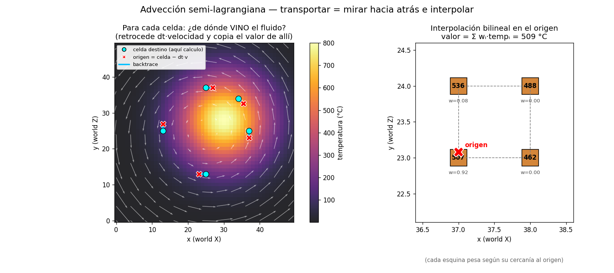
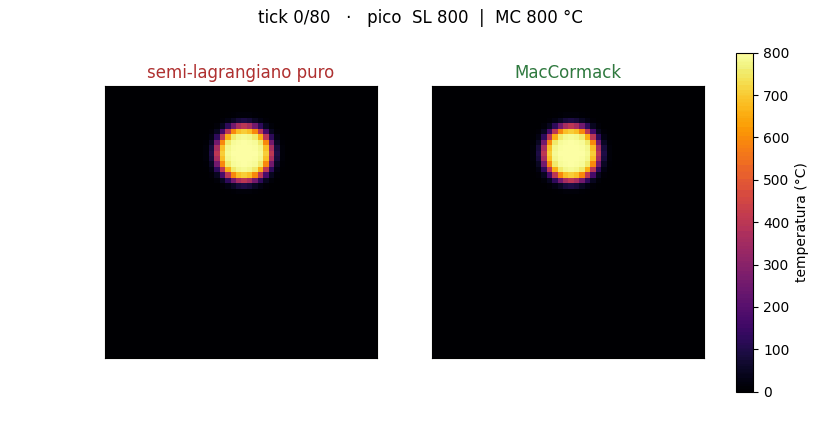

testing-lab · el paso de fluido (2 de 2) · índice
Advección — transportar mirando hacia atrás
La tercera operación mueve la temperatura (y la densidad y la reacción) por el campo de velocidad ya corregido. Dos ideas: el backtrace semi-lagrangiano y la corrección MacCormack que evita que todo se emborrone.
engine/adveccion.h).
1 · Semi-lagrangiano: ¿de dónde VINO el fluido?
Lo intuitivo sería empujar cada celda hacia adelante siguiendo su velocidad. El esquema semi-lagrangiano hace lo contrario, y por eso es estable: para cada celda pregunta "¿de qué punto venía el fluido que ahora me ocupa?" Ese punto de origen es la posición de la celda menos un paso de su velocidad:
Como el origen casi nunca cae justo en el centro de una celda, el valor se interpola entre las celdas que lo rodean (bilineal en 2D, trilineal en 3D): un promedio ponderado por cercanía.

2 · El precio: difusión numérica
Esa misma interpolación que da estabilidad tiene un coste. Cada vez que promediamos, suavizamos un poco. Paso tras paso, el promediar repetido emborrona los frentes nítidos: es la difusión numérica, un desenfoque que no tiene nada que ver con la física, solo con el método.
Se ve en la fila de arriba de la siguiente figura (un disco nítido girando): vuelta tras vuelta el disco pierde altura y se desparrama en una mancha difusa. Idealmente una rotación no debería cambiarlo en absoluto.
3 · MacCormack: recuperar el filo perdido
Para combatir la difusión, el motor añade una corrección de tipo MacCormack. La idea es astuta: si avanzas un paso y luego lo deshaces hacia atrás, no vuelves al punto de partida — la diferencia es el error que introdujo el método, y se puede usar para compensarlo. Tres pasos:
3. resultado = adelante + ½ · (original − atrás) el término (original − atrás) estima el error y lo corrige


¿Y para qué sirve mover el calor por ese campo? Para verlo todo junto — buoyancy, presión y advección colaborando para llevar el fuego hacia el combustible — mira el experimento integrado del paso de fluido.
Cómo reproducir
bash testing-lab/build.sh
testing-lab/.venv/bin/python testing-lab/experiments/adveccion_backtrace.py # qué es el semi-lagrangiano
testing-lab/.venv/bin/python testing-lab/experiments/adveccion_maccormack.py # difusión vs MacCormack (+ GIF)
# tests de cordura:
testing-lab/.venv/bin/python testing-lab/tests/test_adveccion_backtrace.py
testing-lab/.venv/bin/python testing-lab/tests/test_adveccion_maccormack.py